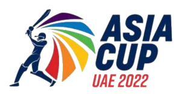
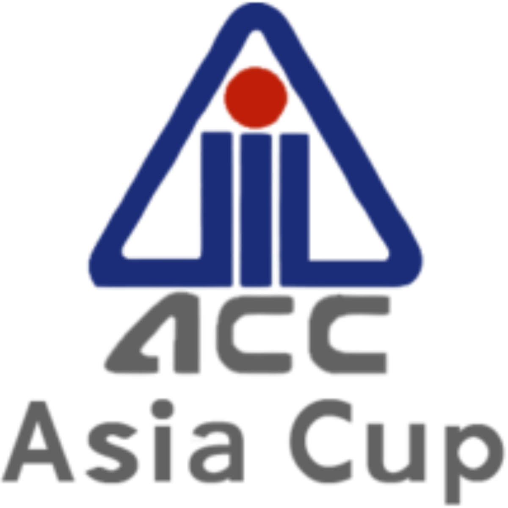

Asia Cup Cricket Tournament
Exploring the prestigious cricket tournament contested by Asian nations since 1984
About the Asia Cup
Welcome to this comprehensive guide on the Asia Cup cricket tournament! My name is Somesh, and I'm excited to share information about this prestigious Asian cricket competition.
The Asia Cup, officially known as the Asian Cricket Council Asia Cup, is a cricket tournament played between Asian countries. Whether you're a cricket enthusiast or simply interested in learning more about this tournament, this guide provides valuable insights into its history, format, and champions.

History and Format
The Asia Cup was first held in 1984 in the United Arab Emirates (UAE). It features matches in both One Day International (50 overs) and Twenty20 International (20 over) formats. The Asian Cricket Council (ACC) is the governing body for the tournament and determines the host nation.
The tournament structure includes a Group Stage followed by knockout matches. Since 2016, the format alternates every 2 years between ODI and T20I, usually aligning with upcoming ICC world events. For example, the 2016 event was the first played in T20I format and served as preparation for the 2016 ICC World Twenty20.

India is the most successful team in the tournament with seven titles (six ODI and one T20I), followed by Sri Lanka with six titles. Sri Lanka has participated in the most Asia Cups (14), followed by India, Pakistan, and Bangladesh with 13 appearances each.
The tournament started with India, Pakistan, and Sri Lanka in 1984. Bangladesh joined in 1986, followed by the United Arab Emirates and Hong Kong in 2004, and Afghanistan in 2014.
Asia Cup Winners Through the Years
Below is a comprehensive list of Asia Cup tournaments, hosts, formats, and champions since 1984:
| Year | Host Nation | Format | Final/Venue | Winner |
|---|---|---|---|---|
| 1984 | UAE | ODI | Sharjah, India-Sri Lanka | India |
| 1986 | Sri Lanka | ODI | Colombo, Sri Lanka-Pakistan | Sri Lanka |
| 1988 | Bangladesh | ODI | Dhaka, India-Sri Lanka | India |
| 1990-91 | India | ODI | Kolkata, India-Sri Lanka | India |
| 1993 | Pakistan | ODI | --- | Cancelled |
| 1995 | UAE | ODI | Sharjah, India-Sri Lanka | India |
| 1997 | Sri Lanka | ODI | Colombo, Sri Lanka-India | Sri Lanka |
| 2000 | Bangladesh | ODI | Dhaka, Sri Lanka-Pakistan | Pakistan |
| 2004 | Sri Lanka | ODI | Colombo, Sri Lanka-India | Sri Lanka |
| 2008 | Pakistan | ODI | Karachi, Sri Lanka-India | Sri Lanka |
| 2010 | Sri Lanka | ODI | Dambulla, India-Sri Lanka | India |
| 2012 | Bangladesh | ODI | Mirpur, Pakistan-Bangladesh | Pakistan |
| 2014 | Bangladesh | ODI | Mirpur, Sri Lanka-Pakistan | Sri Lanka |
| 2016 | Bangladesh | T20I | Mirpur, India-Bangladesh | India |
| 2018 | UAE | ODI | Dubai, India-Bangladesh | India |
| 2022 | UAE | T20I | Dubai, Sri Lanka-Pakistan | Sri Lanka |
| 2023 | Pakistan/Sri Lanka | ODI | Colombo, India-Sri Lanka | India |
Team Performances
The following table shows teams and their championship records in the Asia Cup:
| Team | Championships/Best Performance |
|---|---|
| India | Champions (1984, 1988, 1990–91, 1995, 2010, 2016, 2018, 2023) |
| Sri Lanka | Champions (1986, 1997, 2004, 2008, 2014, 2022) |
| Pakistan | Champions (2000, 2012) |
| Bangladesh | Runners-up (2012, 2016, 2018) |
| Afghanistan | Super Four (2018, 2022) |
| Hong Kong | Group stage (2004, 2008, 2018, 2022) |
| United Arab Emirates (UAE) | Group stage (2004, 2008, 2016) |
Looking Forward
The Asia Cup continues to be one of the most exciting cricket tournaments in Asia, showcasing the region's cricketing talent and fostering competitive spirit among Asian nations. The tournament serves as excellent preparation for world events and has contributed significantly to the development of cricket in Asia.
For more information about upcoming tournaments and the latest news, you can visit the official Asian Cricket Council website.